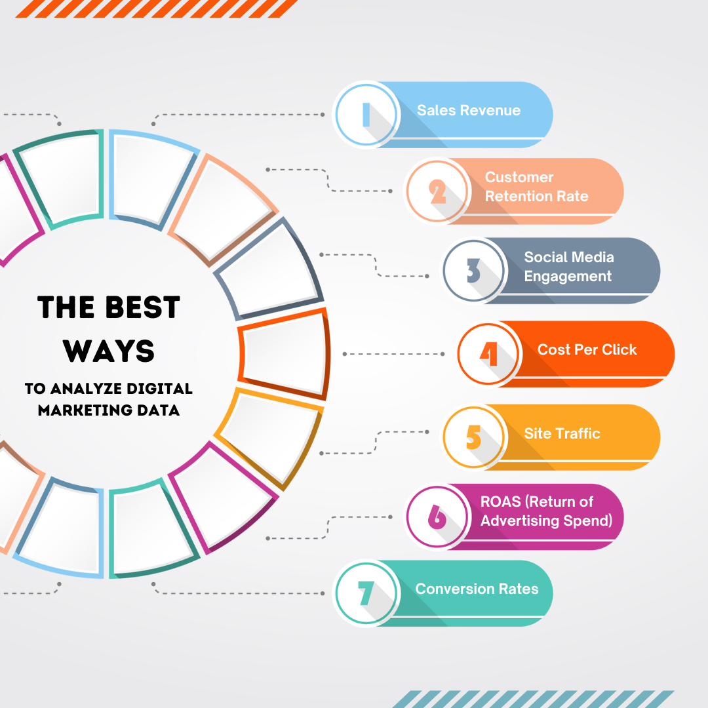

Digital marketing is a broad term that encompasses a variety of different marketing activities. Some of the most common digital marketing activities include: Search engine optimization (SEO): The process of improving the ranking of a website in search engine results pages (SERPs). Pay-per-click (PPC) advertising: The use of paid ads to appear at the top of search engine results pages. Social media marketing: The use of social media platforms to connect with customers and promote products or services. Email marketing: The use of email to send promotional messages to customers. Content marketing: The creation and distribution of valuable content to attract and engage customers. Digital marketing can be a very effective way to reach and engage with customers. It is a cost-effective way to reach a large audience, and it can be targeted to specific demographics or interests. However, digital marketing is also a complex and ever-changing field. There are a lot of different factors to consider when developing a digital marketing strategy, and it is important to stay up-to-date on the latest trends. If you are considering using digital marketing to reach your customers, there are a few things you should keep in mind: Set clear goals: What do you want to achieve with your digital marketing efforts? Do you want to increase brand awareness, generate leads, or drive sales? Target your audience: Who are you trying to reach with your digital marketing efforts? What are their interests? What are their pain points? Create valuable content: Your content should be informative, engaging, and relevant to your target audience. Measure your results: It is important to track the results of your digital marketing efforts so you can see what is working and what is not. Digital marketing can be a very effective way to reach and engage with customers. However, it is important to have a clear strategy and to measure your results. By following these tips, you can increase your chances of success with digital marketing. Here are some of the benefits of digital marketing: It can help you reach a wider audience: Digital marketing allows you to reach a wider audience than traditional marketing methods, such as print or television advertising. It is more cost-effective: Digital marketing can be more cost-effective than traditional marketing methods, as you only pay for the clicks or impressions you receive. It is more targeted: Digital marketing allows you to target your marketing messages to specific demographics or interests, which can help you improve your return on investment (ROI). It is measurable: Digital marketing is more measurable than traditional marketing methods, as you can track the results of your campaigns and see what is working and what is not. If you are looking for a way to reach and engage with customers in a more effective and cost-effective way, then digital marketing is a good option to consider.
There are many reasons why our company is best for digital marketing. Here are a few of the most important ones: We have a team of experienced and talented digital marketers. Our team has been working in the digital marketing industry for over 10 years, and we have a deep understanding of the latest digital marketing trends and technologies. We are customer-focused. We understand that your business is important to you, and we are committed to providing you with digital marketing services that meet your needs and exceed your expectations. We offer a wide range of services. We can help you with everything from developing a digital marketing strategy to creating and managing your social media accounts. We also offer a variety of additional services, such as SEO, PPC advertising, and email marketing. We are affordable. We offer our services at a competitive price, and we are always willing to work with you to find a solution that fits your budget. In addition to these reasons, we are also committed to providing you with a high level of customer service. We will be there to answer your questions, help you with any problems you may have, and make sure that you are completely satisfied with our services. If you are looking for a digital marketing company that can help you reach your business goals, then we encourage you to contact us. We would be happy to discuss your needs and provide you with a quote. Here are some of the specific benefits of working with our company: We will work with you to understand your needs and goals. We want to create a digital marketing strategy that is tailored to your specific business and audience. We will use the latest digital marketing trends and technologies. We want to create a digital marketing campaign that is both effective and efficient. We will track the results of your digital marketing campaigns so you can see what is working and what is not. This will help you make informed decisions about your marketing budget and strategy. We offer a satisfaction guarantee. We are confident that you will be happy with our work, but if you are not, we will make it right. We believe that our company is the best choice for digital marketing because we offer a combination of experience, expertise, and customer service. We are committed to creating digital marketing campaigns that are both effective and efficient, and we want to help you achieve your business goals.